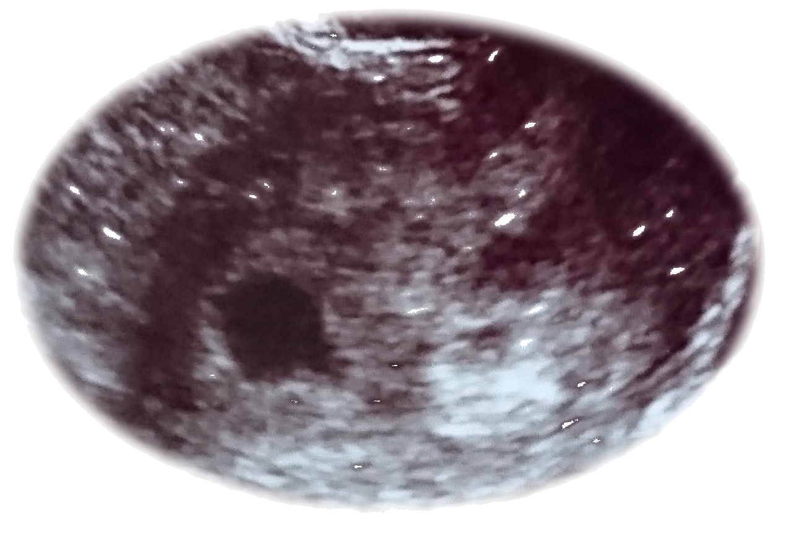
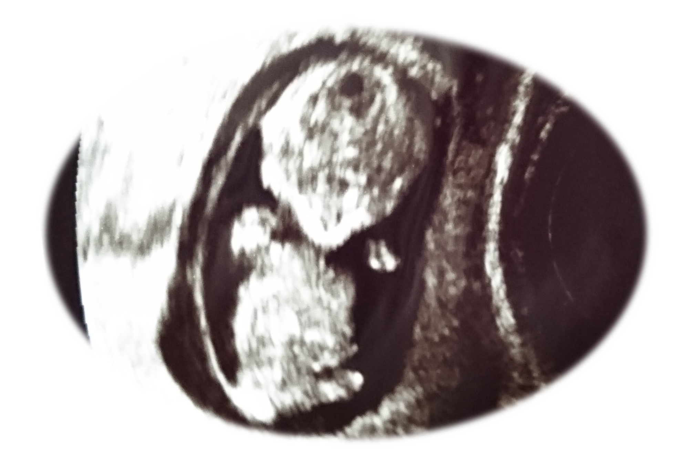
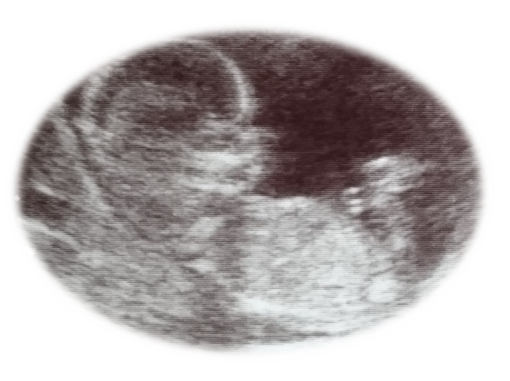
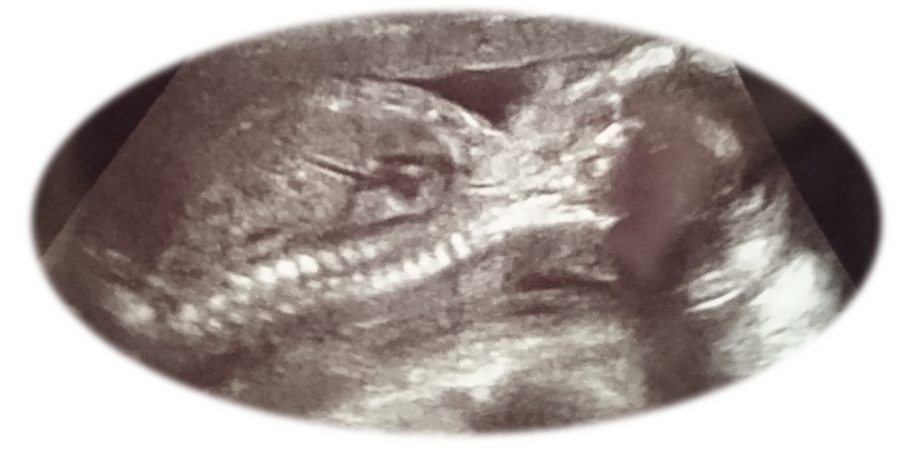
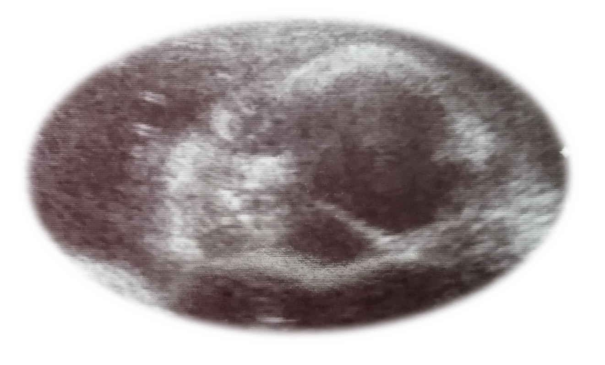

これから父親になる人へ
世の中には妊娠・出産・育児について（当たり前ですが）女性向けに作られた雑誌・Webサイトは数多くありますが、男性目線で書かれた情報はあまり多くないかもしれません。
このサイトではこれから父親になる人、あるいは父親になる予定の人に向けて、妻の妊娠周期に合わせて何をすればよいか・どういうことに気を付けるべきかポイントを紹介しています。
自分が妊娠するわけではないので体調や日常生活に変化が無く、父親になるという実感はあまり感じ取れないと思います。
ところが妻のお腹が徐々に大きくなるにつれ、子供が産まれるまでに父親になる者としてやらなければならないことが実はたくさんあります。
妻への気遣い…お金の手続き…ベビーグッズの準備…
大概の新米パパは何していいか分からないと思います。
妻に「何もしない旦那さん」と残念な印象を持たれる前に、いつ・何をすべきか事前に情報を入れておいて頼れる旦那さんにレベルアップしておきましょう。
2ヶ月目
妊娠4~7週目。
たまに昼ドラとかの演出で「急に吐き気に襲われる」⇒「トイレでおう吐」⇒「まさか…!!」の展開が繰り広げられるが、それは妊娠2ヶ月目なんだなと思っていい。
この頃の赤ちゃんの様子
| 身長 | 体重 | 補足 |
|---|---|---|
| 1~2cm | 1~4g（ぶどう1粒） | えらや尻尾がある 既に心臓が動いている |
旦那さんに必要な対応は？
嫁さんからの報告を受けて初めて妊娠したことが判明すると思いますが、まずは盛大に喜びお祝いしてあげましょう。
喫煙者ならばまずはこれを機会にタバコをきっぱりと止めちゃいましょう。
実は喫煙者が吸う主流煙より周囲の人が吸う副流煙の方が有毒物質が多いらしいです。
まさに百害あって一利なし(´･ω･｀)
ちなみに禁酒もできるならなお良し。
この時期、嫁さんに悪阻（つわり）の症状が現れはじめます。
吐き気や発熱、腹痛などの症状が出ますが市販薬は胎児に悪影響を与えるのでお医者さんが処方してくれる薬以外は服用させないように気を付けましょう。
他にも眠くなったり味覚が変わったりやる気が起きなかったりと様々な症状が出る場合もあります。
旦那さんは臨機応変にサポートしてあげましょう。
妊娠中は食べられるものが少し限られてきます。
アルコール（お酒）はもちろんNGですが、カフェインを含むコーヒーや烏龍茶、食中毒の心配がある生の魚介類も極力控えるようにしましょう。
「気分転換に回転寿司でも行こうか。」とか言わないように気を付けてください。
妊娠中の重要な栄養素として葉酸が挙げられます。葉酸サプリメントを買ってきてあげましょう。
まとめ
- 禁煙・禁酒する（少なくとも嫁さんの前では…）
- どんなに体調悪くとも市販薬は服用させない
- 食べてよいもの・悪いものを把握する
3ヶ月目
妊娠8~11週目。
多くの人が悪阻（つわり）真っ只中なので、旦那さんの献身的なサポートが必須となる時期です。
この頃の赤ちゃんの様子
| 身長 | 体重 | 補足 |
|---|---|---|
| 7~8cm | 20g（いちご1粒） | 脳が発達する 3頭身 |
旦那さんに必要な対応は？
家事全般の他にも精神的なケアもしてあげられると理想的です。
一緒に健診に付き添うのも（人にもよるが）心の負担を軽くすることができます。
この時期に母子手帳も受け取ることができるので、悪阻で動けなくなっている嫁さんの代わりに役所に行って受け取ってあげましょう（ただし、平日のみ…）
嫁さんの体調が比較的マシな日は行きたい場所へ連れてってあげましょう。
本当に毎日動けないでいると体力が落ち血流も悪くなるので、胎児の成長にあまりよくありません。
行く当てがないならせめて一緒にウォーキングに出かけてあげましょう。自分の場合は「ポケモンGO」を理由にして外に連れ出していました。
ちなみに、海女さんは流産率が低いと言われていて、妊婦さんの体力づくりのためには水泳が一番お勧めです。
旦那さんは風疹にかからないように気を付けましょう。
風疹とは俗にいう「はしか」の名で通っている。
風疹にかかり妊婦に移してしまうと胎児が障がいを持つ原因となってしまうため、風疹予防は重要です。
区や市町村によって風疹の抗体を持っているかどうかを無料で検査してもらえるので忙しい合間を縫って検査することをお勧めします。
まとめ
- メンタル的にも支えてあげましょう
-
 体調がいい日は積極的に外出を
体調がいい日は積極的に外出を
- 風疹の抗体検査を受診しましょう
リンク
風疹の感染予防（厚生労働省）4ヶ月目
妊娠12~15週目。
4ヶ月目に入ると「安定期」となり、嫁さんを散々苦しめていた悪阻が収まる頃です。
この頃の赤ちゃんの様子
| 身長 | 体重 | 補足 |
|---|---|---|
| 17cm | 100g（キウイ1個） | 内臓や手足が完成 耳が聞こえ始める |
旦那さんに必要な対応は？
ベビーグッズを探しに出かけましょう。
ベビーカーにはＡ型とB型があるのはご存知でしょうか？
独身時代はベビーグッズなんてほぼ無関心だったと思いますが、父親になるからには知っていく必要があります。
現在は海外ブランドのベビーグッズが浸透してきています。洗練されたデザイン・機能性や操作性の良さ・安全性の高さ・足元を見るかのように設定された価格…
ベビーカーやベビーベッドはレンタルするという手もあるので、何を買うか、何をレンタルで済ますかしっかり検討しましょう。
国内で流行っている海外ブランドのベビーグッズをいくつかご紹介します。
| ブランド名（商品名） | 分類 | 特徴 |
|---|---|---|
| Peg-Perego | ベビーカー | イタリアで生まれたブランド。 創立以来一貫してイタリアのデザイナーがデザインを手掛けている。 |
| bugaboo | ベビーカー | オランダで生まれたブランド。 ユニークな外見、豊富なカラーバリエーションが魅力。 |
| Inglesina | ベビーカー | イタリアで生まれたブランド。 海外ブランドとしては小型で女性でも扱いやすい。 |
| ergobaby | 抱っこ紐 | ハワイで生まれたブランド。 抱っこ時に腰や肩への負担を減らしてくれる。芸能人も利用されている方が多いらしい。 |
| Mag Formers | おもちゃ | アメリカ生まれのおもちゃ。 磁石が入ったパーツを組み合わせることでいろんな立体構造を作ることができる。 |
まとめ
- ベビーグッズの購入計画をたてよう。
5ヶ月目
妊娠16~19週目。
妊娠中期に突入。胎動が感じられるようになるのもこの頃からです。
この頃の赤ちゃんの様子
| 身長 | 体重 | 補足 |
|---|---|---|
| 25cm | 300g（りんご1個） | お腹の中で 活発に動き回る |
旦那さんに必要な対応は？
戌の日に安産祈願へ行きましょう。
日本では妊娠5ヶ月目の最初の戌の日に安産祈願をする風習（帯祝い）があります。
戌の日や帯祝いの風習を全く知らなかったという方は多くいらっしゃるかと思います。
戌は十二支の11番目にあたり、12日に1度やってきます。安産祈願を行える神社などもチェックしておきましょう。
胎教を始めましょう。
胎教は「妊婦が精神安定に努めて、胎児によい影響を与えようとすること」です。
ひと昔前は英語のリスニングをして、産まれる前からの超早期英才教育を行う方もいたそうですが、医学的にそれで語学力の優れた子供が産まれるという根拠はないようです。
とにかく妊婦がリラックスできることが最重要！リラックスさえできればロックでもデスメタルでも実は問題なし。
ちなみにクラシックを聴くと脳にα波が出てリラックス効果があるとされています。
管理人はYouTubeの胎教チャンネルを登録してこれ見よがしに流していました。
まとめ
- 戌の日に安産祈願へ。
- 胎教でリラックス(^^♪)
リンク
都内の安産祈願が可能な神社です。
6ヶ月目
妊娠20~23週目。
妊娠期間もちょうど折り返し地点に突入しました。サッカーで言うならハーフタイムです。
この頃の赤ちゃんの様子
| 身長 | 体重 | 補足 |
|---|---|---|
| 30cm | 500g（夏みかん2個） | 爪が毛が生える 瞬きや口を開けることも |
旦那さんに必要な対応は？
嫁さんと一緒に出掛ける時は歩く速さに注意しましょう。
この頃、妊婦の体は更に子宮を広げるために柔軟性を高めるためのホルモンが分泌されます。
体が柔らかくなりますが反対に体重を支える力が弱まり、腰痛になりやすくなります。
広がった子宮も心臓や肺を圧迫しているので、息切れしやすくなります。
一休さんくらいに慌てないで一休みしながら歩くことを心がけましょう。
赤ちゃんの名前を考えよう。
そろそろ性別も判明してくる頃です（赤ちゃんの体勢により判別できないこともあります。）
名前は一生ものですので、後悔しないようにしましょう。
突然ですが問題です。何と読むでしょうか？
| No. | 名前 | |
|---|---|---|
| 1 | 是留舵 | ぜるだ |
| 2 | 夢見 | ろまん |
| 3 | 瑛磨 | えいす |
| No. | 名前 | |
|---|---|---|
| 1 | 理想女 | りそな |
| 2 | 音音 | のんのん |
| 3 | 宝愛瑠 | じゅえる |
まとめ
- 歩く時はゆっくりゆっくり…
- 素敵な名前を付けてあげよう
7ヶ月目
妊娠24~27週目。
出産予定日まであと100日をきります。カウントダウンが始まった感じがしますね。
この頃の赤ちゃんの様子

| 身長 | 体重 | 補足 |
|---|---|---|
| 32～36cm | 800～1000g（メロン1個） | 大脳が発達 指しゃぶりをする |
旦那さんに必要な対応は？
保育所を探しましょう（俗にいう保活）
夫婦共働きを考えている場合、避けては通れない待機児童問題…
ネットで何でも調べられる時代ですが、保活するならまず最初に自治体の窓口へ。
国もヤジられながらも内閣府が2015年の春から子ども・子育て支援制度を導入し、待機児童問題の対策をはじめています。
まとめ
- 戌の日に安産祈願へ。
- 胎教でリラックス(^^♪)
リンク
都内の安産祈願が可能な神社です。